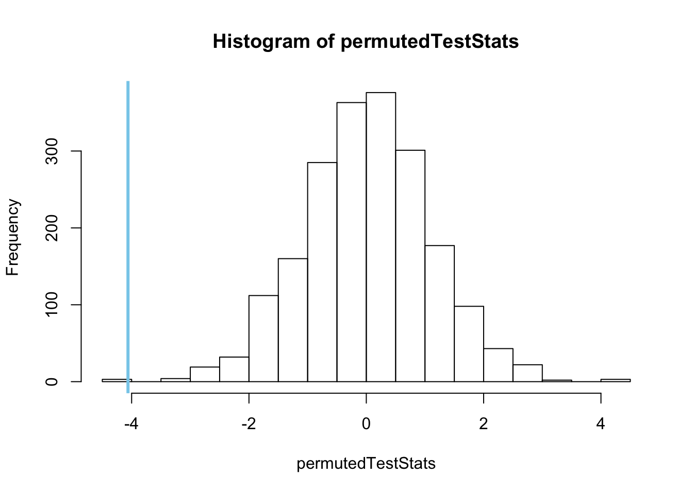

Permutation Tests
A nonparametric approach to computing the p-value for any test statistic in just about any scenario.
Overview
In almost all hypothesis testing scenarios, the null hypothesis can be interpreted as follows.
\(H_0\): Any pattern that has been witnessed in the sampled data is simply due to random chance.
Permutation Tests depend completely on this single idea. If all patterns in the data really are simply due to random chance, then the null hypothesis is true. Further, random re-samples of the data should show similar lack of patterns. However, if the pattern in the data is real, then random re-samples of the data will show very different patterns from the original.
Consider the following image. In that image, the toy blocks on the left show a clear pattern or structure. They are nicely organized into colored piles. This suggests a real pattern that is not random. Someone certainly organized those blocks into that pattern. The blocks didn’t land that way by random chance. On the other hand, the pile of toy blocks shown on the right is certainly a random pattern. This is a pattern that would result if the toy blocks were put into a bag, shaken up, and dumped out. This is the idea of the permutation test. If there is structure in the data, then “mixing up the data and dumping it out again” will show very different patterns from the original. However, if the data was just random to begin with, then we would see a similar pattern by “mixing up the data and dumping it out again.”

The process of a permutation test is:
- Compute a test statistic for the original data.
- Re-sample the data (“shake it up and dump it out”) thousands of times, computing a new test statistic each time, to create a sampling distribution of the test statistic.
- Compute the p-value of the permutation test as the percentage of test statistics that are as extreme or more extreme than the one originally observed.
In review, the sampling distribution is created by permuting (randomly rearranging) the data thousands of times and calculating a test statistic on each permuted version of the data. A histogram of the test statistics then provides the sampling distribution of the test statistic needed to compute the p-value of the original test statistic.
Explanation
The most difficult part of a permutation test is in the random permuting of the data. How the permuting is performed depends on the type of hypothesis test being performed. It is important to remember that the permutation test only changes the way the p-value is calculated. Everything else about the original test is unchanged when switching to a permutation test.
Paired Data Example
See the Sleep Paired t Test example for the background and context of the study. Here is how to perform the test as a permutation test instead of a t test.
The question that this sleep data can answer concerns which drug is more effective at increasing the amount of extra sleep an individual receives. The associated hypotheses would be \[
H_0: \mu_d = 0
\] \[
H_a: \mu_d \neq 0
\] where \(\mu_d\) denotes the true mean of the differences between the observations for each drug obtained from each individual. Differences would be obtained by \(d_i = \text{extra}_{1i} - \text{extra}_{2i}\).
To perform a permutation test of the hypothesis that the drugs are equally effective, we use the following code.
# Perform the initial test:
myTest <- with(sleep, t.test(extra[group==1], extra[group==2], paired = TRUE, mu = 0))
# Get the test statistic from the test:
observedTestStat <- myTest$statistic
# Obtain the permutation sampling distribution
N <- 2000
permutedTestStats <- rep(NA, N)
for (i in 1:N){
permuteData <- sample(x=c(-1,1), size=10, replace=TRUE)
permutedTest <- with(sleep, t.test(permuteData*(extra[group==1] - extra[group==2]), mu = 0))
#Note, t.test(group1 - group2) is the same as t.test(group1, group2, paired=TRUE).
permutedTestStats[i] <- permutedTest$statistic
}
hist(permutedTestStats)
abline(v=observedTestStat, col='skyblue', lwd=3)
# Greater than p-value: (not what we want here)
sum(permutedTestStats >= observedTestStat)/N## [1] 1# Less than p-value:
sum(permutedTestStats <= observedTestStat)/N## [1] 0.0015# Correct two sided p-value for this study:
2*sum(permutedTestStats <= observedTestStat)/N## [1] 0.003Other Examples from Students
Independent Samples t Test (and Wilcoxon) (click to show/hide)